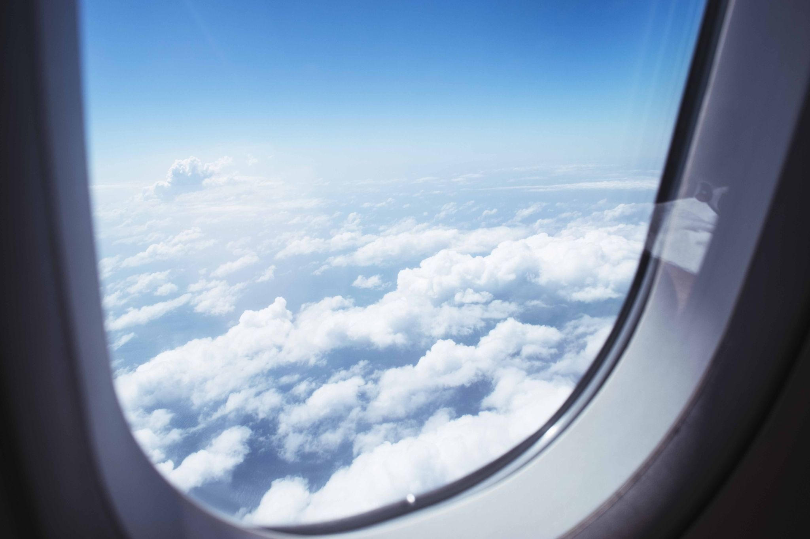
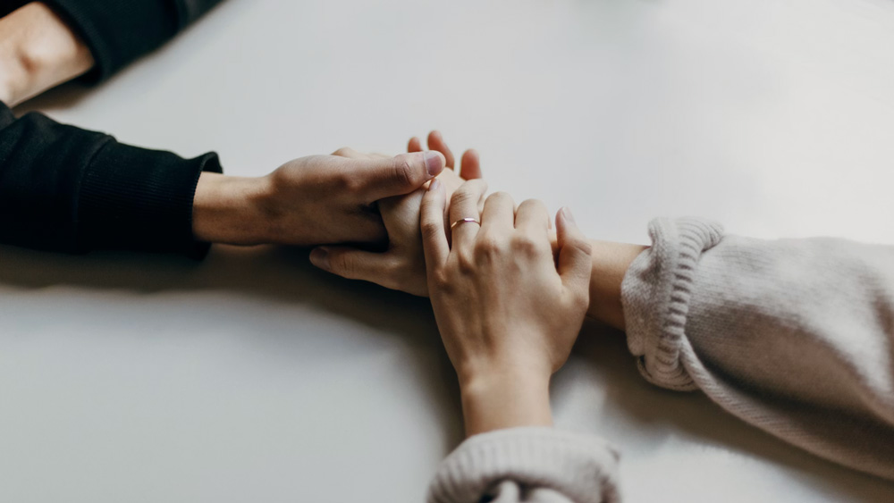
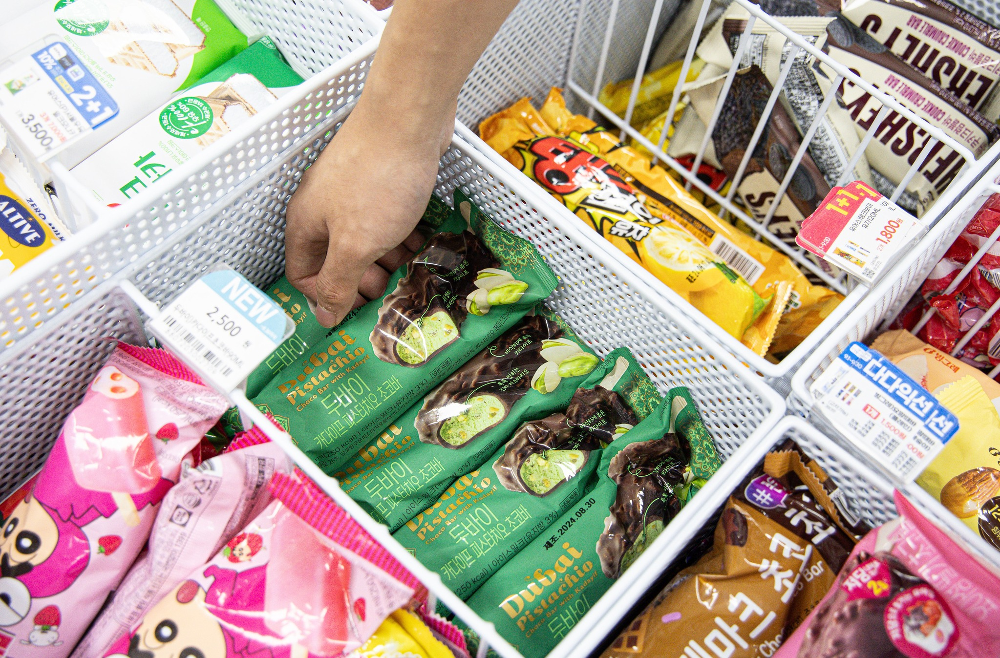
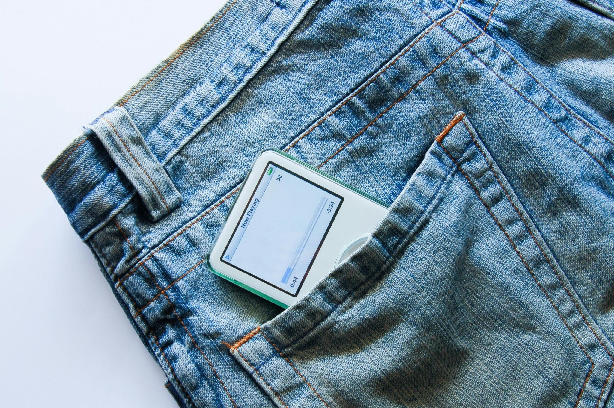

학생들이 링크 본사 블로그에 남긴 글Student Articles on the LiNK Blog
렐프를 거쳐간 학생들이 자신의 이야기를 영어로 써서 링크 본사 블로그에 발행했습니다. 각 글을 클릭하면 원문을 볼 수 있습니다. Students who came through LELP wrote their own stories in English and published them on the LiNK headquarters blog. Click any card to read the full piece.

The North Korea I Remember: School, Family, and Home
저자가 어린 시절 학교와 가족, 이웃과 함께한 평범한 일상의 기억을 되돌아보며, 그리워하는 것은 체제가 아니라 함께 웃고 울었던 사람들이라고 말합니다. The author looks back on ordinary childhood memories of school, family, and neighbors — and reflects that what she misses isn't the system, but the people she once shared life with.

From North Korea to South Korea: Under the Big Dipper
어린 시절 밤하늘의 북두칠성을 보며 어머니를 그리워하던 기억에서 시작해, 탈북 후 재회와 이별까지를 담은 개인적인 회고입니다. A personal reflection that begins with childhood memories of gazing at the Big Dipper and missing her mother, through reunion and eventual loss after her escape from North Korea.

Spring in My Homeland, North Korea: A Glimpse of Reunification in 2045
2045년, 30년 만에 고향을 찾은 탈북 여성의 이야기를 통해 통일을 거대한 담론이 아닌 가족 재회라는 인간적인 순간으로 그려낸 에세이입니다. A fictional glimpse of 2045 imagines a North Korean-born woman returning home after 30 years — framing reunification not as grand politics, but as a deeply personal family reunion.

The Bridge: The Role of North Korean Defectors in a Unified Korea in 2045
30년 만에 재회한 모녀의 이야기를 통해 탈북민이 새로운 삶에 적응해가는 과정과, 통일 한반도에서 이들이 가질 수 있는 역할을 그려봅니다. Through the story of a mother and daughter reunited after 30 years, this essay explores how defectors adapt to a new life — and the role they could play in a unified Korea.

North Korean Defector Economist: How We Analyze North Korea Needs to Change
탈북 경제학자가 기존의 북한 경제 분석 방식에 의문을 던지며, 정권·엘리트·일반 시민 세 집단의 상호작용으로 북한을 새롭게 들여다볼 것을 제안합니다. A North Korean-born economist challenges conventional ways of analyzing the country's economy, proposing a framework built on the interplay between the regime, elites, and ordinary citizens.

Remembering North Korea: Today, I'm Happy Because I Can Have Ice Cream
북한에서 먹던 얼음과자와 남한에서 처음 맛본 아이스크림을 비교하며, 작은 일상의 경험이 어떻게 지난 삶을 기억하게 하는지 이야기합니다. Comparing the ice treats of her childhood in North Korea to her first real ice cream in the South, the author reflects on how small everyday moments keep her past alive.

The Most Dangerous Contraband in North Korea Isn't a Weapon. It's a Wish.
북한에서 자란 저자가 장마당을 통해 들어온 청바지 같은 외국 물건들이 사람들에게 선택이라는 경험을 안겨주었고, 이것이 체제에 대한 저항의 씨앗이 되었다고 말합니다. Growing up in North Korea, the author saw how foreign goods like jeans — smuggled in through underground markets — gave people a taste of choice, planting the seeds of quiet resistance.